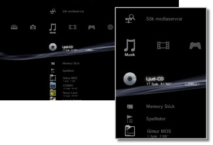

Musik > Musikkategori
Musikkategori
Följande ikoner visas under  (Musik). Ikonerna som visas varierar beroende på vilka villkor som används.
(Musik). Ikonerna som visas varierar beroende på vilka villkor som används.

| (Titelnamn) | Visa kontrollpanelen i litet format. Ikonen som endast visas när musik spelas. | |
|---|---|---|
 |
Sök mediaservrar | Starta en sökning efter DLNA-mediaservrar som är anslutna till samma nätverk. |
 |
Mediaserver | Anslut till DLNA Media Servern och spela upp den musik som finns sparad där. Vilken ikon som visas varierar med typen av server. |
| (Titelnamn) | Spela en Super Audio CD. | |
 |
(cd-titel) | Spela en ljud-cd. |
 |
Dataskiva | Spela upp musikfiler som sparats på kompatibel, inspelbar skiva som t ex en CD-R- eller DVD-R-skiva. |
|
DSD-skiva | Spela upp musikfiler i DSD-format som sparats på kompatibla skivor som exempelvis DVD-R. |
 |
Memory Stick™ | Spela upp musikfiler som sparats på ett Memory Stick™.* |
 |
SD Memory Card | Spela upp musikfiler som sparats på ett SD Memory Card.* |
 |
CompactFlash® | Spela upp musikfiler som sparats på ett CompactFlash®.* |
 |
PSP™ (PlayStation®Portable) | Spela upp musikfiler som sparats på PSP™-systemets Memory Stick™. |
 |
PSP™ (PlayStation®Portable) | Spela upp musikfiler som sparats i systemlagringen i PSP™go-systemet. |
 |
Digitalkamera | Spela upp musikfiler som sparats på en digitalkamera. |
 |
WALKMAN®/ATRAC Audio Device (WALKMAN®) | Spela musikfiler sparade på en WALKMAN®/ATRAC Audio Device (WALKMAN®). |
 |
ATRAC Audio Device | Spela musikfiler sparade på en ATRAC Audio Device. |
 |
USB-enhet | Spela upp musikfiler som sparats på ett USB-minne. |
 |
Spellistor | Du kan skapa spellistor och redigera och spela spellistor som redan har skapats. |
 |
(mapp) | Den här ikonen visas för mappar som skapats på lagringsmediet med en dator. |
 |
(filer som sparats i lagringsminnet) | Spela upp musikfiler som sparats i lagringsminnet i PS3™-systemet. När bilddata är tillgängliga, visas miniatyrbilder av dessa. |
| * |
En lämplig USB-adapter (medföljer ej) krävs för att använda lagringsmedia med vissa modeller av PS3™-systemet. När lagringsmediet används med en USB-adapter kommer den att visas som |
|---|
 (USB-enhet).
(USB-enhet).Tips!
- Detaljerad information om DLNA finns under
 (Inställningar) >
(Inställningar) >  (Nätverksinställningar) > [Mediaserveranslutning] i denna handbok.
(Nätverksinställningar) > [Mediaserveranslutning] i denna handbok. - I sällsynta fall kan det hända att skivor och annan media inte fungerar som de ska i PS3™-systemet. Detta beror i första hand på variationerna mellan tillverkningsprocesserna eller på kodningen av programvaran.
- När ljud från Super Audio CD-skivor hörs från systemets DIGITAL OUT (OPTICAL)-anslutning, förekommer enkel uppspelning (uppspelning vid 44,1 kHz med 16 bitar).
Obs!
Super Audio CD kan inte spelas upp på vissa PS3™-system. För mer information, se [Olika typer av uppspelningsbara skivor].